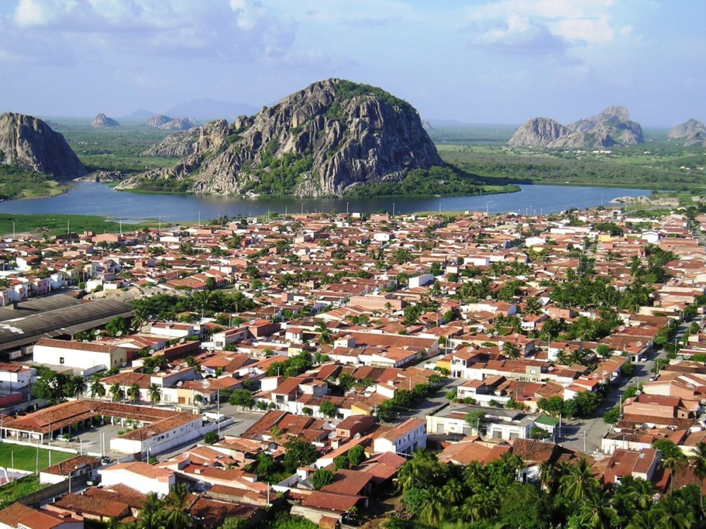

Descubra as Belezas de Quixadá
Quixadá, localizada no sertão central do Ceará, é famosa por seus impressionantes monólitos e paisagens naturais únicas. A cidade é um destino perfeito para quem busca aventura, cultura e contato com a natureza.
Entre os principais atrativos estão a Pedra da Galinha Choca, o Açude do Cedro, trilhas ecológicas e esportes radicais como voo livre. Além disso, Quixadá oferece uma rica gastronomia regional e festas tradicionais que encantam visitantes de todo o Brasil.